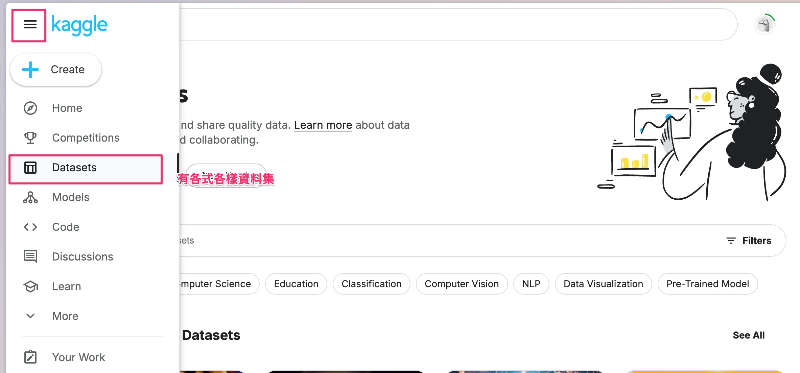
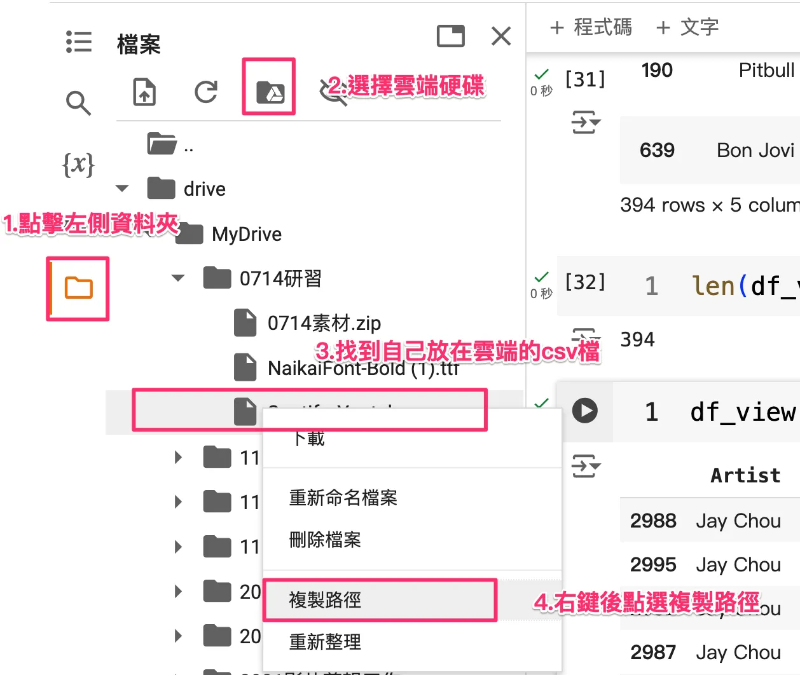
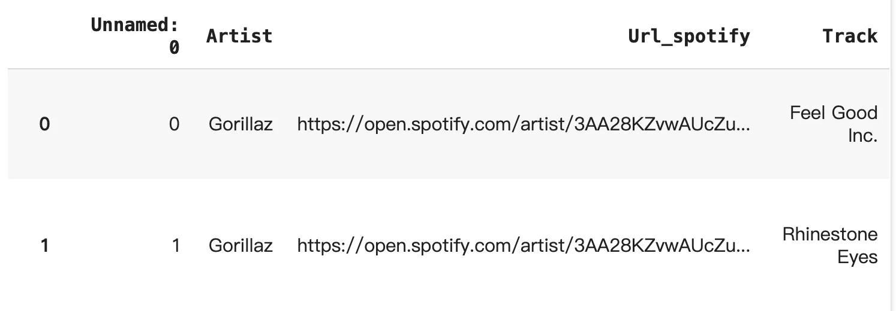
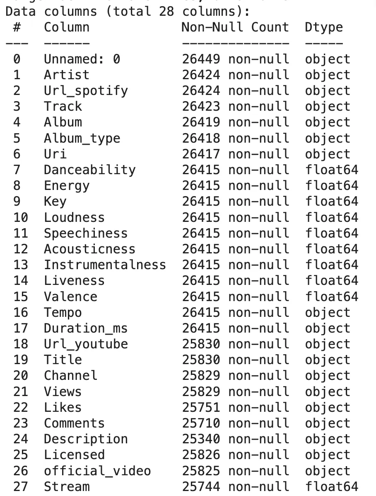
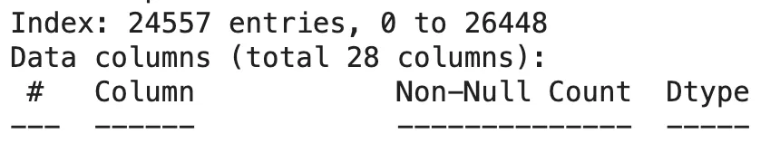
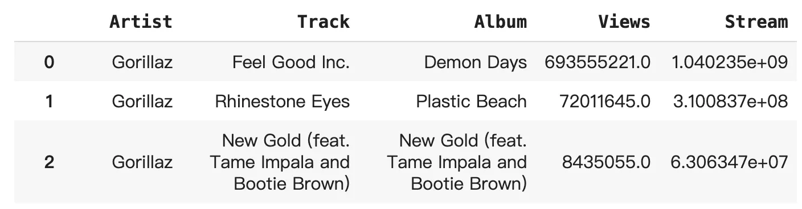
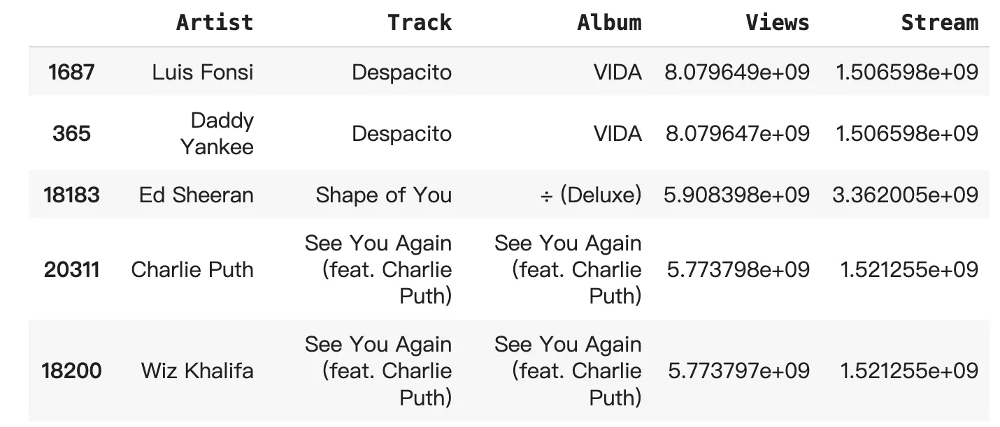
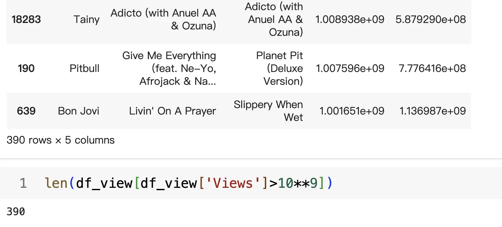
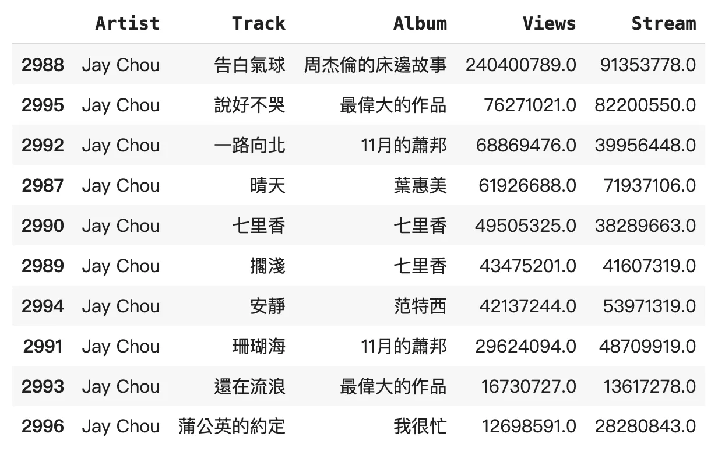

資料科學二三週實戰練習-你知道周杰倫最紅的歌是哪一首嗎？
在[Kaggle](https://www.kaggle.com/code/anzarwani2/spotify-youtube-top-music-songs-eda)上下載「Spotify and Youtube」資料集，利用Google Colab分析熱門歌曲數據，搭配ChatGPT處理文字編碼，探索分析資料特徵及處理方法，最後篩選觀看量超過10億的歌曲，發現數據驚人且探討周杰倫歌曲在全球的表現和挑戰。有趣的研究話題等著你！
前言
利用上兩週的操作，我們將在Kaggle下載一些資料集來進行實戰練習，以此篇為例我下載了「Spotify and Youtube」統計Spotify 藝人的前 10 首熱門歌曲以及他們在 YouTube 上的影片的統計數據。
你也可以試試看「2019年最流行的Youtube影片」
若想下載其他的，可在Dataset進行尋找

此外，建議可以搭配ChatGPT，完成自己想要的任務
資料匯入
在Kaggle下載好資料集後，使用Google Colab 連接雲端資料夾

使用pd.read_csv() 可以直接讀取csv檔，並轉換成Dataframe
不過在這個資料集因為含有很多國家的歌手，在文字編碼各不相同(我的猜測)，所以我請ChatGPT做了額外的檔案處理
因為我想保留資料是utf-8編碼(避免中文亂碼)，略過會發生錯誤的資料列
1 | |

資料欄位分析
確定有些什麼欄位，還有欄位的格式，方便我之後運算
1 | |

在Kaggle資料集也有對欄位的介紹，不過透過這可以看到，Views(Youtube的觀看數)的型態是Object，還有資料有26449筆，但Views只有25829筆
分析前處理
二三週還沒講到分析前的處理，但我偷跑讓資料更好分析，畢竟真實資料集通常會「髒髒的」
空資料刪除
我初步想法是做跟觀看數有關的，於是我先把沒有觀看的資料列刪除，使用dropna ：
1 | |

刪除完後可以看到資料變成24557筆
資料型態轉換
Views(Youtube的觀看數)的型態是Object，透過astype(float) 做轉換
1 | |

資料分析(EDA)
EDA 是 Exploratory Data Analysis（探索性資料分析）的縮寫。它是一種初步分析資料集的方法，旨在通過視覺化、統計摘要和資料轉換等技術手段來發現資料的結構、模式、異常值和潛在的關聯。
抓取想要的欄位
我先將我要的資料列出來分別是「藝人」、「歌名」、「專輯」、「Youtube觀看」、「Spotify串流次數」，並存在另一個表中，避免我的原本的資料還有需要使用
1 | |

其中1.04e+09代表10的九次方也就是10.04億次收聽
流量排序
這也還沒講，可以使用GPT試看看
單純是因為我不知道篩選一首歌的流量，怎樣算是多？於是我把流量高到低進行排序
使用sort_values()進行排序而裡面的by代表要排序的欄位，ascending代表是否要由小到大
再使用head() 列出前100筆資料(預設為5筆)
1 | |

可以看出此資料集Youtube最高觀看80億(應該是2022或2023的資料)，Spotify串流有15億次收聽
有趣的是Ed Sheeran串流30幾億但Youtube只有59億
資料篩選
最後我篩選出高於十億收看的歌曲，共有***首呢？
1 | |

使用len() 看出列數，總共390首歌，這樣多嗎？
消費台灣
最後想到，那我們亞洲巨星周杰倫的歌在世界上如何呢？
1 | |

這首七年前（以2024年來說）的告白氣球，資料集是2.4億次觀看(2024年為2.5億次觀看)
可以發現要達到10億是一個多了不起的數字啊
但同時可以想想，前幾年有個新聞，如果一首歌它有1億觀看，真實性又有多少？(我沒有偷臭)可能是個好的研究議題，下週見吧XD